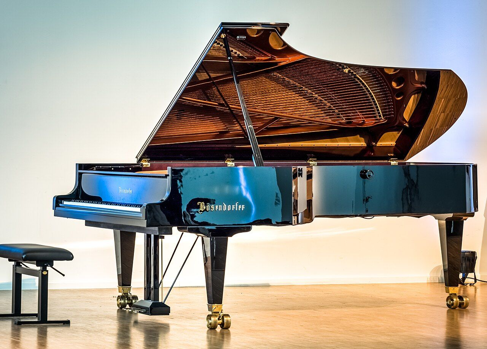

Jour 2 · Day 2
Ma grande famille
My big family
Bonjour Nicola ! Aujourd'hui, vous apprenez à présenter votre grande famille en anglais : les mots de la famille, les petits mots my, his et her, et le verbe have (avoir). Comme hier : écoutez, la tortue 🐢 pour écouter lentement, et répétez toujours à voix haute. Le haut-parleur rouge lit les explications en français.
Les mots de la famille6 min
Family words
| Mon couple et mes enfants | |
my wife | ma femme, mon épouse Le mari se dit husband. |
my son | mon fils Se prononce comme sun, le soleil. |
my daughter | ma fille Le gh ne se prononce pas : « dô-teu ». |
my children | mes enfants Un enfant : a child. Au pluriel, le mot change : children. |
my daughter-in-law | ma belle-fille in-law veut dire « par alliance » : my mother-in-law, ma belle-mère. |
| Mes frères et sœurs | |
my sister | ma sœur |
my brother | mon frère |
| Mes petits-enfants | |
my grandson | mon petit-fils |
my granddaughter | ma petite-fille |
my grandchildren | mes petits-enfants grand + children : le mot se construit comme en français. |
| Et la famille à quatre pattes | |
our dog | notre chien, notre chienne Le même mot pour le mâle et la femelle. |
my, your, his, her…8 min
Possessive words
Ces petits mots disent à qui appartient quelque chose ou quelqu'un. Bonne nouvelle : en anglais, ils ne changent jamais, que le mot qui suit soit masculin, féminin ou pluriel. My veut dire mon, ma et mes.
my | mon, ma, mes | |
your | ton, ta, tes · votre, vos | |
his | son, sa, ses (à lui) | |
her | son, sa, ses (à elle) | |
our | notre, nos | |
their | leur, leurs |
💡 Le grand truc : his ou her ?
En français, on dit « son frère » pour un homme comme pour une femme. En anglais, on regarde la personne à qui il appartient : un homme, c'est his ; une femme, c'est her.
Pietro and his sisters are in Milan.
Pietro et ses sœurs sont à Milan.
Giovanna and her brother Nicola.
Giovanna et son frère Nicola.
My wife is Dominique.
Ma femme, c'est Dominique.
Mimma and her sister Sabina are in Milan.
Mimma et sa sœur Sabina sont à Milan.
Jolie is our dog. Her name means pretty in French!
Jolie est notre chienne. Son nom veut dire « jolie » en français !
Our family is very big.
Notre famille est très grande.
Le verbe have (avoir)6 min
The verb to have
Un seul changement à retenir : avec he, she et it, have devient has. Pour toutes les autres personnes, c'est have.
I have | j'ai | |
you have | tu as · vous avez | |
he has | il a | |
she has | elle a | |
it has | il, elle a (une chose, un animal) | |
we have | nous avons | |
they have | ils, elles ont |
I have four children.
J'ai quatre enfants.
I have three sisters and one brother.
J'ai trois sœurs et un frère.
Pietro has three sisters.
Pietro a trois sœurs.
Dominique and I have four grandchildren.
Dominique et moi avons quatre petits-enfants.
I have a piano and a guitar.
J'ai un piano et une guitare.
❓ Pour poser la question
Retenez cette question toute faite, Giovanna pourrait vous la poser :
How many children do you have?
Combien d'enfants as-tu ? Combien d'enfants avez-vous ?
How many grandchildren do you have?
Combien de petits-enfants as-tu ?
🇬🇧 À savoir
En Angleterre, on entend aussi I've got, qui veut dire exactement la même chose que I have : I've got four children.

Je présente ma famille4 min
Introducing my family
Voici votre famille, présentée en anglais. Écoutez chaque phrase, puis lisez tout le texte à voix haute, comme si vous le racontiez à Giovanna.
Hello! I'm Nicola. I have a big family.
Bonjour ! Je suis Nicola. J'ai une grande famille.
My wife is Dominique.
Ma femme, c'est Dominique.
I have four children: Emanuele, Irene, Sabine and Sergio.
J'ai quatre enfants : Emanuele, Irene, Sabine et Sergio.
Cristina is my daughter-in-law.
Cristina est ma belle-fille.
I have four grandchildren: Dominique, Tom, Lilio and Saveria.
J'ai quatre petits-enfants : Dominique, Tom, Lilio et Saveria.
And we have a dog, Jolie: our little granddaughter!
Et nous avons une chienne, Jolie : notre petite-fille !
I have three sisters and one brother.
J'ai trois sœurs et un frère.
Giovanna is in Canada. Mimma, Sabina and Pietro are in Milan.
Giovanna est au Canada. Mimma, Sabina et Pietro sont à Milan.
Prononciation3 min
Pronunciation
👅 Le th de brother
Comme pour thank you : le bout de la langue entre les dents, mais cette fois la gorge vibre, comme un « z » très doux.
brother, mother, father
frère, mère, père
💨 Le h de his, her, have
Le h se prononce : un petit souffle. Sans lui, his devient is, et ce n'est plus le même mot !
his, her, have, has
son, sa, avoir, a
🤫 Les lettres muettes
Dans daughter, le gh ne se prononce pas. Dans grandson, le d s'entend à peine.
daughter, granddaughter, grandson
fille, petite-fille, petit-fils
Exercices12 min
Exercises
La correction est immédiate et chaque bonne réponse vaut un point. Vos erreurs s'ajoutent à « À revoir », avec un lien pour relire la leçon.
1
EXERCICE 1
J'écoute et je comprends
Listen and choose
1Écoutez et choisissez.
2Écoutez et choisissez.
3Écoutez et choisissez.
4Écoutez et choisissez.
5Écoutez et choisissez.
6Écoutez et choisissez.
7Écoutez et choisissez.
8Écoutez et choisissez.
2
EXERCICE 2
Qui est-ce ?
Who is it?
1👩 Dominique, c'est votre femme : Dominique is my …….
2👨 Sergio, c'est votre fils : Sergio is my …….
3👧 Saveria, c'est votre petite-fille : Saveria is my …….
4🧔 Pietro, c'est votre frère : Pietro is my …….
5👩 Cristina, c'est votre belle-fille : Cristina is my …….
6👦 Tom, c'est votre petit-fils : Tom is my …….
3
EXERCICE 3
his ou her ?
his or her?
1Pietro and …… sisters.
2Giovanna and …… brother Nicola.
3Irene and …… father.
4Emanuele and …… sister Sabine.
5Mimma and …… sister Sabina.
6Nicola and …… guitar.
7Dominique and …… husband.
8Tom and …… grandfather.
4
EXERCICE 4
have ou has ?
have or has?
1I …… four children.
2Pietro …… three sisters.
3We …… a dog.
4Giovanna …… two sisters and two brothers.
5Nicola and Dominique …… four children.
6You …… a beautiful family.
7Nicola …… a piano and a guitar.
5
EXERCICE 5
Remettez les mots dans l'ordre
Put the words in order
Touchez les étiquettes dans le bon ordre. Touchez une étiquette déjà placée pour la remettre en bas.
1J'ai quatre enfants.
2Ma femme, c'est Dominique.
3Jolie est notre chienne.
4J'ai trois sœurs.
5Combien d'enfants as-tu ?
6
EXERCICE 6
Écrivez le mot anglais
Write the English word
Écrivez le mot anglais qui correspond. Pas besoin de majuscule.
1mon fils → my ……
2ma fille → my ……
3ma sœur → my ……
4mon frère → my ……
5ma femme → my ……
6notre chien → our ……
7
EXERCICE 7
Je répète et je parle
Listen, repeat and speak
Écoutez, répétez à voix haute, puis touchez 🎤 et dites la phrase : la page vous montre ce qu'elle a compris. Recommencez autant de fois que vous voulez ; cet exercice ne compte pas dans le score.
Hello! I'm Nicola. I have a big family.Bonjour ! Je suis Nicola. J'ai une grande famille.
My wife is Dominique.Ma femme, c'est Dominique.
I have four children: Emanuele, Irene, Sabine and Sergio.J'ai quatre enfants : Emanuele, Irene, Sabine et Sergio.
Cristina is my daughter-in-law.Cristina est ma belle-fille.
I have four grandchildren: Dominique, Tom, Lilio and Saveria.J'ai quatre petits-enfants : Dominique, Tom, Lilio et Saveria.
And we have a dog, Jolie: our little granddaughter!Et nous avons une chienne, Jolie : notre petite-fille !
I have three sisters and one brother.J'ai trois sœurs et un frère.
Giovanna is in Canada. Mimma, Sabina and Pietro are in Milan.Giovanna est au Canada. Mimma, Sabina et Pietro sont à Milan.
8
EXERCICE 8
Giovanna demande des nouvelles
Giovanna asks about the family
Écoutez Giovanna, puis répondez-lui à voix haute : touchez 🎤 et parlez. Écoutez ensuite le modèle, répétez-le et dites si vous aviez bien répondu.
1Dites qu'elle va bien, merci.
GiovannaHello Nicola! How is Dominique?
Bonjour Nicola ! Comment va Dominique ?
2Dites que vous avez quatre petits-enfants.
GiovannaHow many grandchildren do you have now?
Combien de petits-enfants as-tu maintenant ?
3Dites que Jolie va très bien et que c'est une chienne adorable : a sweet dog.
GiovannaAnd how is Jolie?
Et comment va Jolie ?
4Dites merci, et que vos sœurs et votre frère sont à Milan.
GiovannaSay hello to Mimma, Sabina and Pietro!
Dis bonjour à Mimma, Sabina et Pietro !
À revoir2 min
To review
Les points à revoir apparaîtront ici au fur et à mesure.
📒 Pour demain
Présentez votre famille à voix haute, sans lire : My wife is Dominique. I have four children and four grandchildren. We have a dog, Jolie!